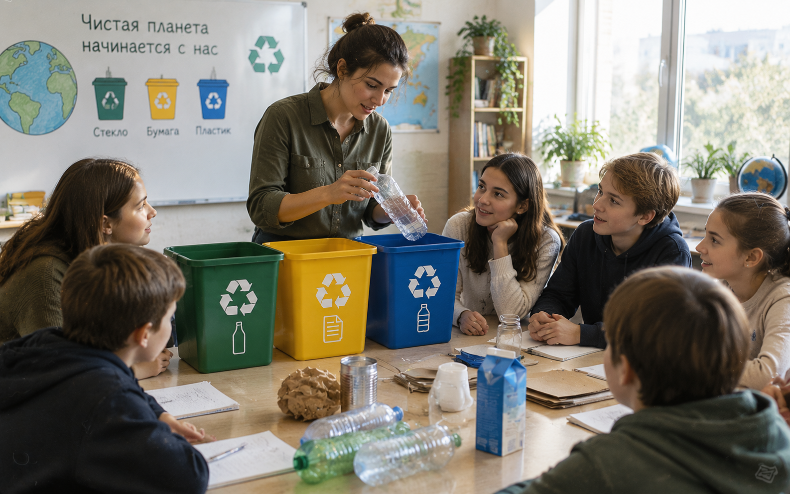
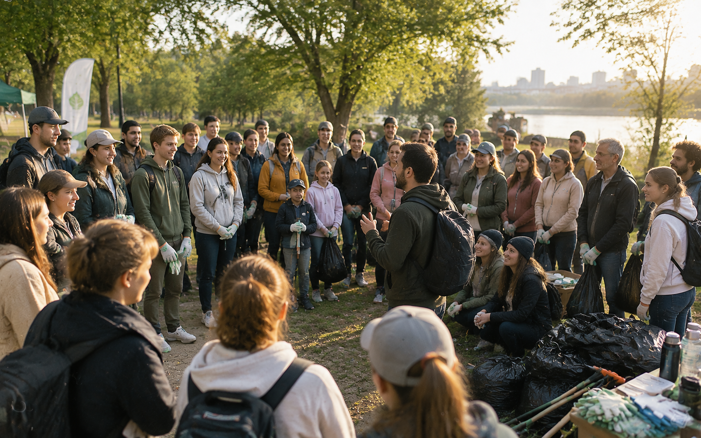

Планета — это не фон.Это то, где мы живём.
«Корни» — сообщество людей, которые перестали делать вид, что мусор исчезает сам. Мы меняем бытовые привычки, убираем за собой и учим других замечать, что оставляют после себя.
мусора в среднем оставляет один городской житель за неделю. Мы помогаем сократить это число — по-настоящему, а не на бумаге.
Мы не спасаем планету лозунгами
Планета не просила красивых слов — ей нужно, чтобы после пикника не осталось пакетов, чтобы батарейка не оказалась в обычном ведре, чтобы вещь донашивали, а не выбрасывали при первой царапине.
Мы убеждены: экология начинается не с глобальных решений, а с одного точного действия — там, где вы стоите прямо сейчас. Поднять чужой окурок с газона. Донести обёртку до урны через два квартала. Отказаться от одиннадцатого пакета в магазине.
«Корни» не продают чувство вины. Мы показываем, что маленькое действие, повторённое тысячами людей, меняет ландшафт — в буквальном смысле. Это сайт не бренда, который что-то продаёт. Это движение людей, которые решили перестать закрывать глаза.
уже проводят регулярные уборки вместе с нашим сообществом
мы собираем данные о том, какие привычки реально работают
стоит участие — движению не нужны ваши деньги, только время
Четыре привычки, с которых всё начинается
Не абстрактная «забота о планете», а конкретные действия, которые можно начать сегодня вечером.
Что уже сделано, а не обещано
Хронология — потому что легче поверить в движение, у которого есть история, а не только манифест.


Голоса тех, кто уже с нами
Не отзывы для маркетинга — реальные слова людей, которые начали с одной привычки.
Где уже можно прийти на встречу
Каждую субботу — где-то из этого списка. Расписание уточняется в форме ниже.
Вопросы, которые задают чаще всего
Если ответа здесь нет — спросите в форме, ответим лично.
Нет. «Корни» — некоммерческое движение, мы не продаём подписки и не собираем взносы. Единственное, что нужно — время на встречи или на пару привычек в быту.
Тогда им можете стать вы. Мы присылаем короткое руководство и на связи с первой встречей — обычно достаточно трёх-пяти человек, чтобы начать.
Тогда начните без встреч — с одной из четырёх привычек, о которых мы рассказали выше. Даже без единого похода на уборку это уже меняет ваш ежедневный след.
База открыта — ей пользуются локальные администрации и другие инициативы, чтобы понимать, где грязнее всего и почему. Никаких личных данных участников там нет.
Начать проще, чем кажется
Оставьте контакты — мы пришлём, где ближайшая встреча в вашем городе, и с чего лучше начать именно вам.